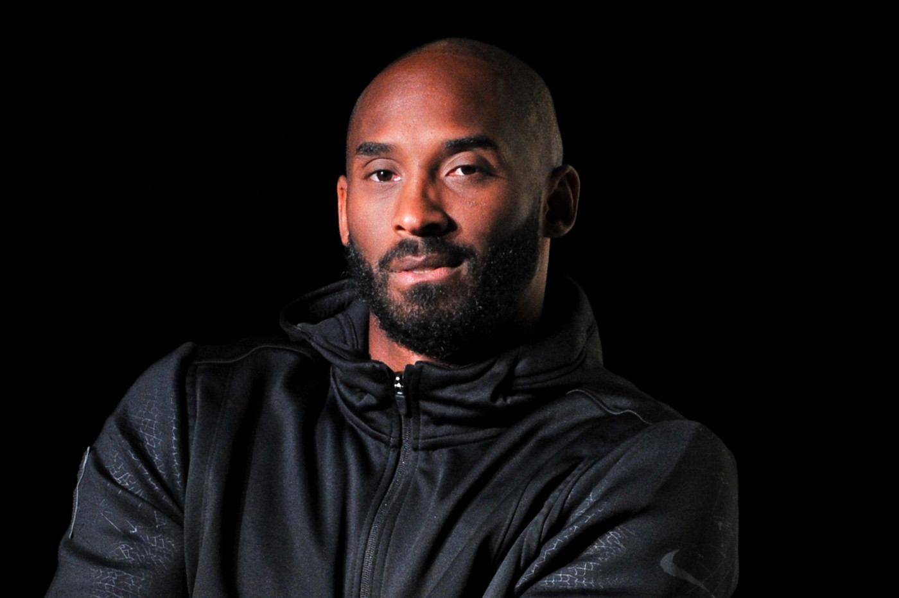

KOBE BRYANT
A life well lived!

1978 - 2020
"I’m reflective only in the sense that I learn to move forward. I reflect with a purpose."
Timeline: A look at the legendary career of Kobe Bryant
- 1996 : Drafted and traded
|
- 1997 : Slam Dunk Contest Champion
- 1999 - 2002: Phil Jackson arrives and the three-peat
- 2004: Fallout with Shaq
- 2005: Phil Jackson returns
- 2006: Career-high 81 points
- 2008 - 2010: Return to championship form